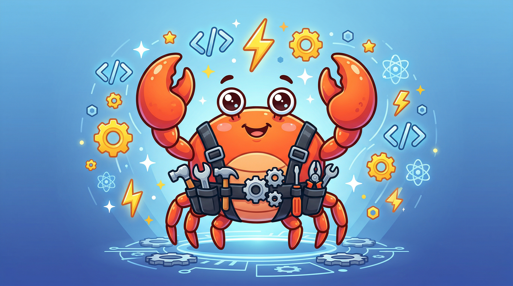

问题
复杂任务
你缺的不是更长的 prompt，而是可组织的团队骨架
README 的话术非常直接：Harness 不是“一个提示词集合”，而是一个把 agent team 组织起来的工厂。它要解决的是多角色协作、上下文拆分、验证与回收，而不是单轮问答。
- 复杂任务需要团队，而不是单点模型。
- 重点在协作结构，不在 prompt 堆料。
revfactory/harness 不是 prompts 清单，而是把 团队架构、skills、agent 定义、验证流程 打包成一套 Claude Code 插件 / Skill。你输入的是领域问题，拿到的是可执行的团队骨架。

Harness 的核心价值不是再造一个 Claude Code，而是把“领域问题 → 团队架构 → skills → 验证”这件事标准化。
README 的话术非常直接：Harness 不是“一个提示词集合”，而是一个把 agent team 组织起来的工厂。它要解决的是多角色协作、上下文拆分、验证与回收，而不是单轮问答。
主仓库明确写的是：生成 .claude/agents/ 与 .claude/skills/，并配套 6 种预定义 team-architecture pattern，让团队定义不再靠手搓。
README 里给出的触发语句很短：build a harness for this project、Design an agent team for this domain、Set up a harness。
它要求 CLAUDE_CODE_EXPERIMENTAL_AGENT_TEAMS=1，适合复杂、需要分工、需要 review gate 的任务；简单脚本不必上这套工厂。
README 里的 6 阶段流程很像一条工厂线：先定义问题，再决定团队，再生成 agents 与 skills，最后做验证。
先解析领域问题：任务边界是什么，哪些是必须协作的子问题。
决定用哪种团队形状：pipeline、fan-out、expert pool，还是 supervisor。
把团队设计落到 .claude/agents/，让角色定义可执行。
把可复用能力落到 .claude/skills/，并用 progressive disclosure 控制上下文。
把角色、技能和通信协议连起来，形成可协调的团队运行面。
最后做触发验证、dry-run、带技能 / 不带技能对比，确认团队真的跑得通。
Harness 的方法不是“一个框架打天下”，而是先选团队形状，再把角色和验证纪律填进去。
顺序依赖式任务流，前一步的结果是后一步的输入。适合分阶段、强依赖的工作。
把独立子任务并行展开，最后统一收敛。适合多源检索、并行分析、批量处理。
按上下文选择性调用专家，不把所有角色都拉进来。适合问题维度很多、但每次只需要少数专家的场景。
先生成，再审查。Harness 把 review gate 当成结构，而不是事后补丁，适合内容与代码质量控制。
中央代理统一分发任务，动态决定谁干什么。适合需要协调多个角色、但又要保留整体控制的项目。
从上到下递归拆分任务，上一层只管目标和边界，下一层继续分解。适合复杂、多层、可继承的工作。
README 的安装和 FAQ 其实给了一个很清楚的判断：它适合团队化的 Claude Code，而不是所有自动化任务。
README 提供两种主路径：从 Marketplace 安装，或者把 skills/harness 复制到 ~/.claude/skills/harness/ 作为全局 Skill。
harness/ ├── .claude-plugin/ │ └── plugin.json ├── skills/ │ └── harness/ │ ├── SKILL.md │ └── references/ │ ├── agent-design-patterns.md │ ├── orchestrator-template.md │ ├── team-examples.md │ ├── skill-writing-guide.md │ ├── skill-testing-guide.md │ └── qa-agent-guide.md
深度研究、网站开发、代码审查、技术文档、数据管道、营销策划……只要任务天然可拆成多角色，它就有用。
README 的边界很清楚：如果你要的是 deterministic runtime config，Archon 更像邻居；如果只是一个简单脚本，就没必要上团队工厂。
如果你需要把 Claude Code 变成可验证、可分工、可复用的团队系统，Harness 很对路；如果你只要一个 prompt 或一段脚本，它就偏重了。
来源：revfactory/harness GitHub README（main）与 GitHub API 公开数据；主仓库：github.com/revfactory/harness。当前公开信号：5,675 stars / 760 forks / 11 issues / Apache-2.0 / updated 2026-06-03 UTC。